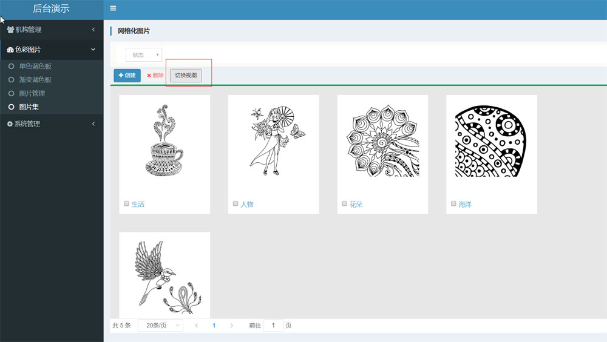
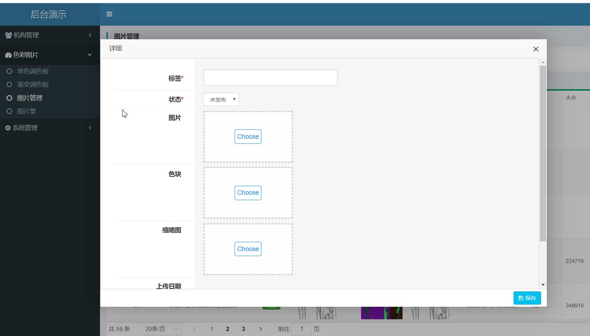
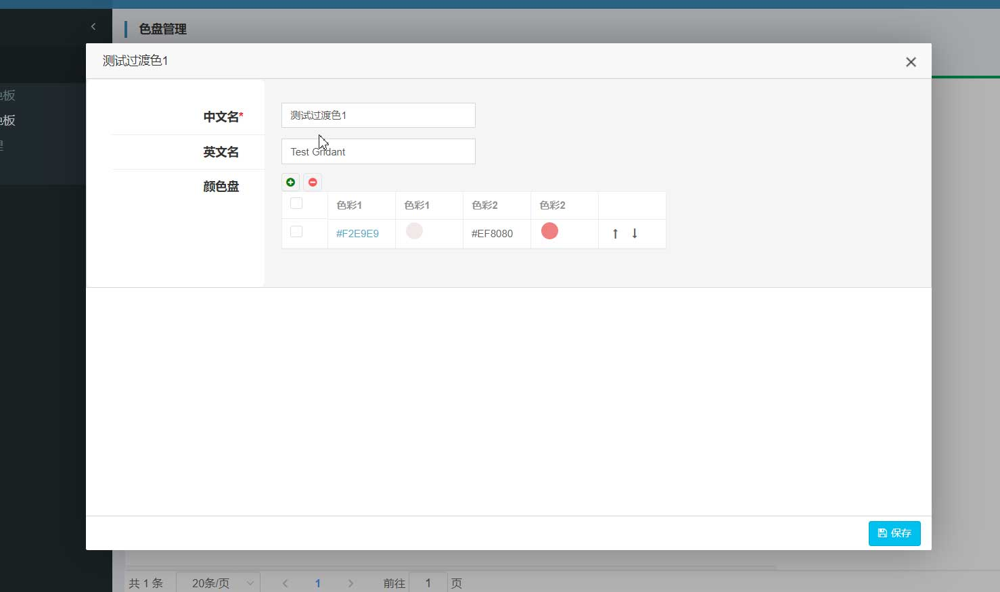

3. 色彩管理
色彩管理模块截取于某app管理后台。主要展示下颜色、图片的管理功能。
3.1. 视图切换
图片列表界面可以根据需求在grid和table视图间切换。grid便于图片浏览，table便于信息的展示

3.2. 图片编辑
下图是图片的编辑界面，选择图片后，会自动上传后台。控件右上角的叉按钮，可以去掉图片重新选择。

3.3. 列表编辑
下图是color调色板中color列表的编辑。通过list组件可以不断的添加颜色到调色板。list编辑组件是一个非常强大的组件，用在管理后台的某些地方会起到重要作用。
